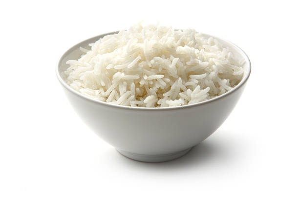

Bowl of Cereal

Description
Easy on the stomach and very filling, this bowl of white rice will help provide you with energy!
Ingredients
- 2 Cups Uncooked White Rice
- 4 Cups Water
- Pinch of Salt
Steps
- Bring water and salt to boil.
- Add rice and simmer for 15-20 minutes or until grains are cooked to desired doneness.
- Enjoy!